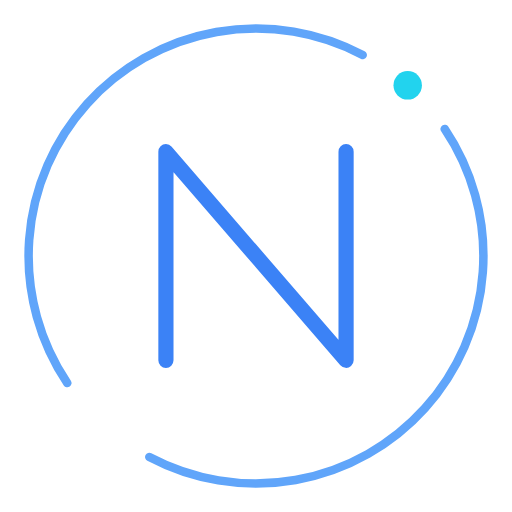

Consulta qué servidores están disponibles, cuánta memoria tienen libre y solicita los recursos que tu proyecto necesita.
En NexusTI, transformamos la gestión de infraestructura tecnológica mediante visibilidad total y control centralizado. Somos una plataforma diseñada para simplificar el monitoreo, la asignación y el reasentamiento de servidores y recursos de cómputo en la nube, permitiendo a los equipos de TI tomar decisiones ágiles basadas en métricas reales de disponibilidad, memoria y carga operativa.
Brindar a las organizaciones una interfaz intuitiva, precisa y confiable para supervisar sus nodos activos y optimizar el despliegue de recursos de cómputo sin interrupciones operativas.
Consolidarnos como el estándar de referencia en soluciones de monitoreo y orquestación de infraestructura híbrida y en la nube, impulsando entornos tecnológicos resilientes y escalables.